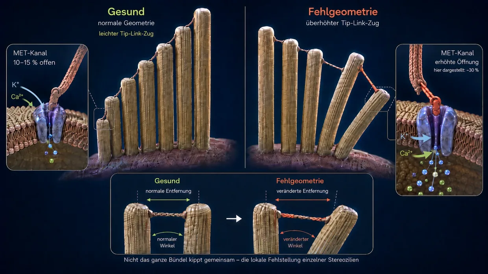
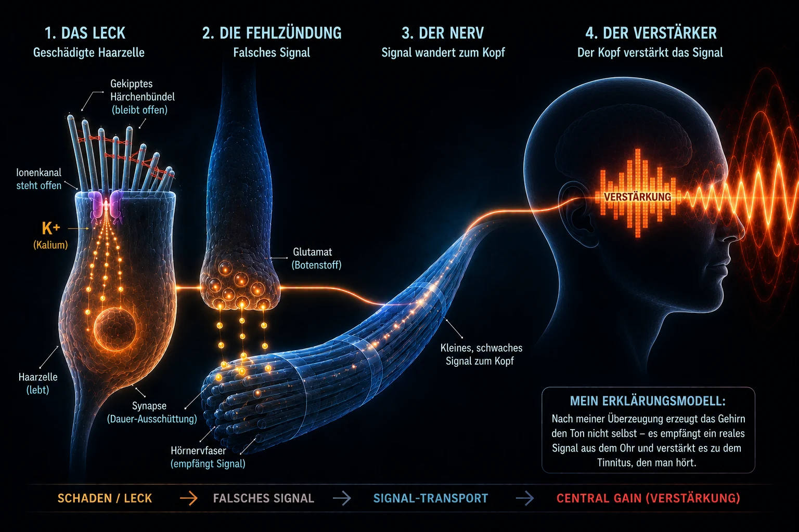

Acouphènes liés au bruit – quand l'oreille atteint ses limites
Dernière mise à jour : juin 2026
Ce que vous lisez ici, c'est ma propre explication, fondée sur des années de recherche et sur mes propres acouphènes, surmontés deux fois – ce n'est pas un standard médical.
Moi aussi, j'ai été concerné à l'époque par cette maladie extrême – comme je l'ai déjà raconté dans ma biographie.
J'étais tellement désespéré que je m'étais juré une chose : soit les acouphènes s'en vont, soit c'est moi qui m'en vais. (Ce n'était évidemment pas à prendre au pied de la lettre, mais la pression sur moi était vraiment énorme.)
Ce que j'ai vécu à l'époque, c'était surtout un son fort, strident, très aigu dans l'oreille gauche, accompagné d'un bourdonnement loin en arrière-plan. C'était le pire que je pouvais m'imaginer à ce moment-là, car pour couronner le tout, l'oreille droite s'y est mise peu après – et ce comme conséquence directe des consignes des médecins, qui se sont révélées, pour moi personnellement, totalement fausses.
Ces « consignes » revenaient au fond à couvrir le son avec d'autres bruits – par exemple avec de la musique au casque à un volume plus élevé, ou avec un bruit de fond qui tourne en permanence. En réalité, cela voulait dire que mes oreilles subissaient encore plus de stimulations sonores, alors qu'elles étaient déjà massivement dépassées. Avec le recul, c'est l'une des plus grosses erreurs, car c'est exactement comme ça que mon état a empiré et que la deuxième oreille s'est retrouvée entraînée là-dedans.
Ce bruit était comme une agression permanente contre mes nerfs, mon sommeil et ma vie entière. Les médecins m'ont dit qu'il fallait apprendre à vivre avec. Sur Internet, je trouvais des thérapies qui se contredisaient les unes les autres. Pour moi, tout cela sonnait comme un aveu d'impuissance.
Alors je me suis juré une chose : ce n'est pas possible que ce soit tout. J'ai commencé à chercher comme un possédé, à lire des études, à comparer des témoignages et à me faire ma propre idée. Petit à petit, un mécanisme clair s'est dessiné – une image qui, pour moi, était logique et qui s'est ensuite confirmée dans mon propre vécu.
Aujourd'hui, je peux le dire : les acouphènes liés au bruit ne sont pas un mystère. Ils sont le résultat d'une oreille qui a été surchargée – et quand on comprend ce qui se passe là-dedans, on comprend aussi pourquoi le bruit est là et ce qu'on peut faire soi-même.
Version courte À lire en 60 secondes – l'essentiel en un paragraphe
À un volume extrême (en boîte de nuit, par exemple), les pompes n'arrivent tout simplement plus à suivre. La consommation d'énergie (l'ATP) explose, la cellule n'arrive plus à en fabriquer assez et bascule dans un mode de secours peu propre, qui produit de l'acide lactique et acidifie le milieu – une spirale descendante, comparable à la défaillance musculaire pendant un sprint. Quand les pompes ne suivent plus, le calcium s'accumule à l'intérieur des minuscules cils sensoriels. Ce calcium en excès active des enzymes de dégradation (les calpaïnes), qui dévorent la « colle » (les crosslinkers) entre les filaments qui structurent l'intérieur du cil. Sans cette colle, le cil perd sa rigidité et se déforme. Du coup, le canal ionique situé à sa pointe reste en permanence trop grand ouvert – comme une fenêtre restée entrouverte. Par cette fuite permanente, du potassium entre en continu et maintient toute la cellule sous tension électrique permanente. Cette tension ouvre, dans la cellule ciliée elle-même, d'autres canaux par lesquels du calcium goutte jusqu'à la synapse et y déclenche une libération ininterrompue de glutamate vers le nerf auditif. Le cerveau reçoit ce signal erroné, faible mais constant, constate que l'entrée normale manque dans cette bande de fréquences, et pousse à fond son préamplificateur interne (le « gain central »). C'est seulement par cette amplification que ce signal erroné et subtil devient un son perçu consciemment – les acouphènes.
La bonne nouvelle : tant que la cellule est vivante, elle possède le plan de construction et la capacité de se réparer. Il lui faut pour cela de l'énergie, des matériaux et du calme.
Ce qui se passe vraiment dans l'oreille : le processus auditif physiologique normal
Avant de plonger dans le sujet, une petite mise au point de vocabulaire, pour qu'on se comprenne bien tout au long du texte : dans l'oreille interne se trouvent ce qu'on appelle les cellules ciliées – ce sont les véritables cellules sensorielles de l'audition. À la surface de chaque cellule ciliée se dresse un faisceau de minuscules prolongements en forme de doigts – les stéréocils. Selon leur position dans la cochlée, on en compte environ 50 à 300 par cellule ciliée, rangés en files du plus court au plus long, comme les tuyaux d'un orgue. Chacun de ces stéréocils possède sa propre charpente interne, faite de protéines d'actine. Au quotidien comme dans la recherche, ces stéréocils sont souvent appelés simplement « cils » ou « cils sensoriels » – et c'est exactement dans ce sens que j'emploie le mot sur cette page. Un point important : quand je parle de « cils », je désigne toujours les stéréocils posés sur la cellule ciliée, pas la cellule ciliée elle-même.
Normalement, l'audition se déroule comme une réaction en chaîne d'une extrême précision :
L'impulsion : une stimulation sonore atteint les fins cils (les stéréocils) des cellules ciliées et les incline sur le côté.
La traction mécanique (les tip-links) : comme les pointes de ces cils sont reliées entre elles par des filaments protéiques d'une extrême finesse (les tip-links), cette inclinaison crée une tension. Ces filaments fonctionnent comme un câble de traction : ils ouvrent physiquement le canal ionique situé à la pointe – un peu comme quand on tire sur la bonde d'une baignoire.
L'entrée des ions : comme l'oreille interne est remplie d'un liquide riche en potassium, du potassium (K+) se précipite aussitôt dans le cil sensoriel par ce canal désormais ouvert – et, en petites quantités, du calcium aussi.
L'activation : cette entrée de potassium modifie la tension électrique de la cellule ciliée (la dépolarisation). Cela ouvre dans un second temps des canaux calciques plus bas, dans la cellule ciliée elle-même – pas dans les cils sensoriels, mais dans le corps cellulaire en dessous.
Le signal : c'est seulement ce calcium entrant qui provoque la libération des neurotransmetteurs, ceux qui envoient le signal au cerveau par le nerf auditif.
La remise à zéro : ensuite, des transporteurs spécialisés – aussi bien dans les cils sensoriels que dans le corps de la cellule ciliée – repompent le potassium et le calcium en excès vers l'extérieur à l'aide d'ATP (l'énergie cellulaire), pour que la cellule puisse se calmer.
Ce système est conçu pour qu'un petit « ouvert-fermé » ait lieu en permanence – comme un rythme respiratoire. Un point est décisif : au repos, le canal à la pointe du cil n'est pas complètement fermé, il reste toujours un tout petit peu ouvert – c'est normal et voulu, pour que la cellule puisse réagir à tout instant au son le plus faible. Tant que le cil se tient droit, cette ouverture reste minime et maîtrisée. Mais si le cil bascule durablement sur le côté, le canal reste bien trop grand ouvert – et c'est précisément ça qui devient un problème.
Avant de regarder ce qui se passe quand ce système est surchargé, une idée importante : quand des acouphènes chroniques apparaissent après un traumatisme sonore, beaucoup de personnes concernées pensent – et beaucoup de médecins donnent aussi cette impression – que les cellules ciliées de l'oreille sont détruites de façon irréversible et que le cerveau produit désormais le son tout seul, de mémoire. Selon ma conviction, cela ne va pas assez loin. Car une cellule ciliée morte n'envoie plus aucun signal – elle est muette. C'est justement parce que le son est LÀ que la cellule doit encore être vivante. Les acouphènes ne sont pas le signe d'une cellule morte, mais le signe d'une cellule qui se bat pour survivre. Il est tout à fait possible que, lors d'un traumatisme sonore, certaines cellules ciliées meurent aussi définitivement – mais celles-là ne jouent aucun rôle dans le phénomène des acouphènes, d'après ce que je comprends, puisqu'il n'en vient plus aucun signal. Le son vient des cellules qui sont encore là et qui se battent – et celles-là sont bloquées dans une perte de fonction d'origine énergétique.
Ce qui suit est une explication détaillée, étape par étape, de cette perte de fonction. Si vous préférez quelque chose de plus ramassé, vous trouverez une version courte à la fin de cette page.
Quand le bruit devient trop fort (ce qui se passe lors d'une soirée en boîte)
Mais si trop de son arrive d'un coup ou de façon durable (chronique), l'équilibre bascule et la mécanique lâche. Toutes les soirées en boîte n'y mènent pas – mais quand des acouphènes liés au bruit apparaissent, alors c'est exactement ce mécanisme qui se cache derrière, selon ma conviction : une cascade faite de perte d'énergie, d'effondrement mécanique et d'inondation chimique – trois processus qui s'alimentent mutuellement et débouchent sur un cercle vicieux.
- 01Effondrement énergétique
- 02Effondrement mécanique
- 03Sauvetage d'urgence & roue du hamster
Étape 1 : l'effondrement énergétique
Rappelons-nous le processus auditif normal : à chaque stimulation sonore, des ions entrent dans la cellule et doivent ensuite être repompés vers l'extérieur, ce qui consomme de l'ATP. À volume normal, c'est un rythme détendu – la cellule pompe tranquillement et a de l'énergie à revendre. Mais à 100 décibels en boîte de nuit, les ondes sonores martèlent les cils sans interruption et avec une force brutale. Les canaux s'ouvrent en grand, les ions entrent en masse, et les pompes n'arrivent tout simplement plus à suivre. La consommation d'énergie explose.
Les cellules ciliées brûlent maintenant beaucoup plus d'énergie qu'elles ne peuvent en fabriquer. Les centrales habituelles de la cellule (les mitochondries) tournent à la limite. Pour arriver malgré tout à calmer cette faim d'énergie énorme, la cellule se rabat sur une voie de secours plus rapide, mais moins propre : la glycolyse anaérobie. Ce mode de secours fournit certes de l'énergie tout de suite, mais il produit comme déchet de l'acide lactique (le lactate), qui fait basculer le milieu cellulaire du côté acide. Les enzymes chargées de la production d'énergie deviennent de moins en moins efficaces à cause de cette acidité – une spirale descendante.
La comparaison avec le sport : tout le monde connaît ça, en soulevant des haltères ou en sprintant. Au bout d'un certain temps, le muscle se met à « brûler » (la montée du lactate) et finit tout simplement par lâcher – la classique défaillance musculaire. C'est exactement cette défaillance chimique qui se produit aussi dans l'oreille interne, sauf qu'on ne la ressent pas comme une douleur, mais comme une panne de fonctionnement.
Et c'est exactement là que se cache le vrai danger : quand les pompes ne suivent plus, le calcium s'accumule à l'intérieur des cils sensoriels. En petites quantités, ce calcium est normal et nécessaire – mais en excès, il devient un destructeur. Ce qu'il détruit et pourquoi c'est si fatal, l'étape 2 le montre.
Étape 2 : l'effondrement mécanique
Pour comprendre ce que le calcium provoque maintenant, il faut savoir brièvement comment un cil sensoriel est construit à l'intérieur : il est fait de centaines de filaments d'actine parallèles – on peut se le représenter comme un paquet de spaghettis crus. Ces filaments sont collés entre eux par de courts ponts protéiques, ce qu'on appelle les crosslinkers. Ces crosslinkers sont le véritable ingénieur en structure du cil – ils tiennent le faisceau si fermement ensemble qu'il se dresse, raide comme un tube d'acier, tout seul, sans consommer la moindre énergie pour ça. Tant que les crosslinkers sont intacts, le cil se tient droit.
À cause de la perte d'énergie de l'étape 1, une réaction en chaîne fatale se met maintenant en route :
Les pompes sont débordées (l'inondation de calcium) : comme on l'a vu pour le processus auditif normal, une petite quantité de calcium entre toujours dans le cil sensoriel en même temps que le potassium. En fonctionnement normal, ce n'est pas un problème – pour ça, des pompes à calcium dédiées siègent directement dans la membrane du cil sensoriel et évacuent ce calcium aussitôt. Sauf que ces pompes ont elles aussi besoin d'ATP. Et dans la surcharge aiguë de la boîte de nuit, l'énergie est loin, très loin de suffire – les pompes sont littéralement débordées. Résultat : même les faibles quantités de calcium qui, normalement, ne poseraient aucun problème s'accumulent maintenant à l'intérieur du cil – et c'est précisément cette surconcentration qui déclenche le véritable effondrement de la structure.
Et voici maintenant le véritable effondrement de la structure : le calcium accumulé active des enzymes de dégradation particulières (ce qu'on appelle les calpaïnes). Ces enzymes dévorent exactement les crosslinkers qu'on vient de découvrir – le mortier qui tient le faisceau ensemble.
Pour comprendre pourquoi c'est aussi dévastateur, une image simple aide :
Prenez un seul spaghetti cru dans la main – vous pouvez le plier et le casser sans effort. Prenez maintenant cent spaghettis et collez-les à la colle forte pour en faire une barre solide – d'un coup, vous avez un tube rigide qui ne se plie presque plus. Les filaments pris un par un sont faibles, mais collés ensemble ils sont forts.
Le cil sensoriel fonctionne exactement pareil : ce ne sont pas les filaments d'actine seuls qui le rendent rigide, mais leur assemblage grâce aux crosslinkers.
Quand les calpaïnes dévorent cette colle, c'est l'inverse qui se produit : le tube rigide redevient un paquet de filaments isolés et lâches. Les filaments d'actine se trouvent toujours dans le stéréocil – ils sont encore là, mais sans les liaisons entre eux, ils ne tiennent plus ensemble. Le cil perd sa rigidité, non pas parce que quelque chose s'est cassé, mais parce que la cohésion interne manque.
Si la personne reste encore en boîte, ça empire souvent : les filaments isolés, désormais sans protection ni appui, peuvent réellement casser aux points faibles sous la pression sonore qui continue – comme des spaghettis pris un par un, qui plient sous la charge parce que les voisins ne les soutiennent plus. Et quand un filament casse, la charge augmente sur les filaments voisins, qui peuvent casser à leur tour – un effet de cascade menace.
Le résultat : sans son maintien interne, le cil n'arrive plus à garder sa position droite – il se déforme. Pour se représenter ce que cela veut dire, l'image suivante aide : les cils sensoriels se tiennent côte à côte en files, de longueurs différentes, et leurs pointes sont reliées entre elles par de fins filaments (les tip-links). En bonne santé, tous les cils se tiennent droits comme des cierges – les filaments entre eux ont exactement la bonne tension, et au repos le canal n'est ouvert que de façon minime. Quand une onde sonore arrive, les cils basculent brièvement sur le côté, les filaments se tendent, le canal s'ouvre – et dès que l'onde est passée, ils rebasculent et tout se détend. Un ouvert-fermé bien propre.
Imaginez maintenant que ces mêmes cils ne se tiennent plus droits, mais penchent de travers – et cela SANS qu'aucune onde n'arrive. Les filaments entre eux sont en permanence tendus autrement que prévu. Et en même temps, la membrane est déformée elle aussi. Du coup, le canal reste trop grand ouvert dès l'état de repos. À partir de ce moment-là, du potassium et du calcium entrent en permanence et sans contrôle dans la cellule, alors que la musique s'est arrêtée depuis longtemps. La fuite permanente est née – et avec elle, la base des acouphènes. La cellule envoie un signal alors qu'il n'y a aucun son – parce que la géométrie ne colle plus.

Chez la plupart des personnes concernées, les acouphènes démarrent assez rapidement après l'événement sonore – en quelques minutes à quelques heures. Il existe cependant aussi des cas où les acouphènes n'apparaissent que des heures, voire des jours plus tard. Pourquoi cela peut se dérouler de façon si différente et quel rôle jouent là-dedans certaines structures de l'oreille, je l'explique en détail dans la rubrique FAQ.
Étape 3 : le sauvetage d'urgence – et pourquoi il ne suffit pas
La cellule enregistre les dégâts et déclenche aussitôt un mécanisme de survie : des protéines de réparation particulières (comme XIRP2), déjà stockées en réserve d'urgence dans le corps cellulaire, foncent vers les zones endommagées. Si des filaments sont cassés, elles s'enroulent autour des cassures comme du ruban adhésif armé à l'échelle moléculaire (les spaghettis de l'étape 2) et empêchent qu'ils rompent complètement et que la cascade échappe à tout contrôle. C'est la phase 1 : la stabilisation d'urgence aiguë. Ce processus va vite (de quelques minutes à quelques heures), parce que XIRP2 n'a pas besoin d'être fabriquée d'abord – elle est seulement recrutée sur le lieu des dégâts. Le cil sensoriel survit – mais la charpente reste molle et instable, car les crosslinkers manquants entre les filaments, XIRP2 ne peut pas les remplacer.
Il faudrait maintenant impérativement que la phase 2 (le remodelage actif) démarre – et elle comporte deux chantiers d'un coup : premièrement, les pansements de XIRP2 devraient être remplacés par de l'actine fraîche et intacte. Deuxièmement, de nouveaux crosslinkers devraient être synthétisés et posés entre les filaments, pour recoller le faisceau en une barre solide. Les deux coûtent énormément d'ATP, les deux réclament du matériel venu du corps cellulaire, et les stéréocils n'ont pas de centrales à eux (pas de mitochondries) – ils dépendent entièrement de l'énergie livrée d'en bas, depuis le corps de la cellule ciliée. Or c'est exactement là que le piège chronique se referme, chez la plupart des adultes. Pourquoi, c'est le prochain chapitre qui l'explique.
-
01Effondrement énergétique
La consommation d'ATP explose, la cellule bascule en mode de secours. L'acide lactique s'accumule, le milieu s'acidifie.
-
02Effondrement mécanique
Le calcium en excès dévore la « colle » entre les filaments du stéréocil. Le cil se déforme – la fuite apparaît.
-
03Sauvetage d'urgence & roue du hamster
XIRP2 stabilise les cassures. Dans l'immédiat, la cellule survit – mais pour la vraie réparation, l'énergie manque.
Le piège de la roue du hamster : pourquoi la réparation n'arrive jamais
Voici maintenant le passage décisif de l'événement aigu au problème chronique.
Dès que le bruit s'arrête, la récupération commence : la cellule se remet aussitôt à produire de l'ATP, et les pompes reviennent petit à petit à leur fonctionnement normal. La régénération dans toute son ampleur – l'élimination de l'acide, les mesures de réparation, le réapprovisionnement des réserves d'énergie – se fait ensuite surtout avec le temps, et particulièrement pendant le sommeil. Le corps fait donc le ménage : le flot d'ions accumulé dans l'urgence – qui s'est constitué aussi bien par la surcharge massive de la boîte de nuit que par la fuite apparue entre-temps – est évacué peu à peu. Le pic extrême d'ions se normalise en grande partie, et avec lui le niveau de calcium redescend sous le seuil critique : les enzymes de dégradation (les calpaïnes) deviennent inactives, les dégâts structurels actifs s'arrêtent.
Alors pourquoi l'oreille ne guérit-elle pas pour autant ?
Parce que la fuite permanente, elle, reste. Les stéréocils continuent de pencher de travers, le canal ionique reste durablement trop grand ouvert, et les pompes doivent évacuer cet excédent vingt-quatre heures sur vingt-quatre. Pour comprendre pourquoi c'est précisément cela qui empêche la réparation, l'image suivante aide :
Le principe toit-maison-cave
Pour saisir ce dilemme d'un seul coup d'œil, il est utile de voir la cellule ciliée comme un bâtiment alimenté par un seul compteur électrique (l'ATP) :
Le toit : les fins cils sensoriels (les stéréocils) avec leur charpente d'actine affaiblie, coincés dans le mode de secours de la phase 1. C'est là-haut que se trouve la fuite, et c'est là-haut que le moteur de la reconstruction devrait tourner. Sauf qu'à la place, les pompes propres au toit sont occupées à évacuer sans cesse le potassium qui entre et, surtout, le calcium dangereux – car si le calcium remonte là-haut au-dessus du seuil critique, les enzymes de dégradation risquent de redevenir actives et d'aggraver les dégâts.
La maison : le grand corps cellulaire proprement dit – et le SEUL endroit où se trouvent les centrales (les mitochondries) qui fabriquent l'ATP pour toutes les parties de la cellule. Par le toit abîmé, des ions en excès entrent maintenant sans interruption.
La cave : ici aussi, en bas, siègent des pompes à ions qui doivent désespérément rejeter à contre-courant le calcium qui a filtré, pour que la maison ne soit pas complètement inondée et que la cellule ne meure pas.
Comme les pompes du toit et celles de la cave consomment l'essentiel de l'énergie disponible rien que pour empêcher le bâtiment de couler, il ne reste plus à la cellule aucune ressource pour envoyer les ouvriers réparer les dégâts de la charpente d'actine. La réparation est repoussée en permanence. La fuite reste ouverte. Les pompes triment. La roue du hamster tourne.
Du combat pour la survie au son : voilà comment naissent les acouphènes

Nous savons maintenant que la fuite permanente existe et que la cellule est coincée dans la roue du hamster. Mais comment tout cela devient-il un son audible ? Le potassium qui entre en continu maintient toute la cellule ciliée sous tension électrique permanente (dépolarisée) – elle ne revient jamais à son potentiel de repos. Cette tension permanente ouvre à son tour des canaux calciques voltage-dépendants plus bas dans la cellule ciliée, par lesquels un peu de calcium goutte désormais en permanence jusqu'à la synapse. Ce calcium déclenche une libération légère mais ininterrompue du neurotransmetteur glutamate vers le nerf auditif. Le cerveau reçoit un signal « FEU ! » permanent – alors qu'aucun son n'est présent – et traduit ce court-circuit chimique en un bruit.
Ce que le cerveau en fait : l'amplificateur, pas la cause
C'est ici que le cerveau entre en scène. La médecine classique affirme souvent que le cerveau a « appris » les acouphènes et qu'il produit désormais le son de façon totalement autonome. Selon ma conviction, c'est incomplet. Le cerveau ne crée pas les acouphènes à partir de rien. Il réagit, en processeur d'une grande complexité, au courant de fuite de glutamate constant et erroné qui vient de l'oreille.
Comme les vrais signaux extérieurs, les signaux propres (les fréquences normales), manquent à cause du traumatisme sonore et des cils penchés, le centre auditif du cerveau se retrouve dans une sorte de privation sensorielle. En mécanisme de protection hérité de l'évolution, le cerveau y réagit sans le moindre compromis : il pousse à fond le préamplificateur pour exactement ces fréquences manquantes – ce qu'on appelle le « gain central ». Dans la nature sauvage, c'était vital pour la survie : entendre encore, malgré une oreille abîmée, le pas du prédateur qui s'approche. Le cerveau prend donc ce courant de fuite, en soi très faible, des cellules ciliées abîmées et le fait passer par un égaliseur gigantesque. Il amplifie le signal jusqu'à en faire la sirène assourdissante que nous percevons consciemment comme des acouphènes.
Le piège fatal du masquage : pourquoi les applis de bruit blanc sont la pire chose à faire
Le masquage brûle la seule fenêtre de réparation qu'il reste à votre oreille.
C'est là que se trouve, d'après mon expérience, l'erreur la plus grave que commettent les personnes concernées – sur conseil médical. La recommandation classique est : « Couvrez le son avec du bruit blanc, des sons de la nature ou de la musique douce. » Cela paraît logique d'instinct et, à court terme, cela soulage réellement. Mais d'après ce que je comprends, c'est fatal sur le plan biochimique.
Il faut bien avoir ça en tête : les cils sont encore vivants et actifs – mais ils penchent de travers. La cellule, elle, essaie d'utiliser chaque phase de repos (surtout pendant le sommeil) pour réparer la structure avec l'énergie qui lui reste et se redresser.
Mais si on continue d'envoyer artificiellement du son dans les oreilles, on force les stéréocils endommagés à repasser en mode travail. Ils doivent à nouveau réagir au son, pomper des ions, et ils consomment exactement l'énergie qu'ils avaient mise de côté pour la phase 2 – la vraie réparation. Et il y a un deuxième problème : chaque onde sonore fait glisser les filaments d'actine les uns contre les autres dans le faisceau abîmé. Les crosslinkers tout juste posés sont expulsés par ce mouvement permanent avant d'avoir pu se lier correctement – comme un barreau qu'on veut remettre dans une échelle pendant que quelqu'un secoue l'échelle.
Dans l'image toit-maison-cave : le son artificiel fouette mécaniquement un toit déjà mou. La fuite reste trop grande ouverte. Les pompes de la cave doivent tourner 24 heures sur 24 à la limite absolue. Pour les ouvriers là-haut sur le toit, il ne reste zéro énergie.
Cela explique un phénomène que j'ai vécu moi-même et que d'innombrables personnes concernées rapportent : on couvre les acouphènes la nuit avec du bruit, on se sent mieux sur le moment, mais le lendemain matin les acouphènes sont plus agressifs et plus forts que la veille au soir. La raison : la cellule a brûlé son service de nuit – la seule fenêtre de réparation – à traiter le son artificiel.
Un mot honnête là-dessus : je comprends parfaitement pourquoi certaines personnes vivent bien avec le masquage. Quand les acouphènes vous tirent psychiquement vers le gouffre et rendent le sommeil impossible, le fait de les couvrir sur le moment peut au sens propre sauver une vie – et je ne veux en dissuader personne qui en soit là. Mais pour la vraie régénération – c'est-à-dire pour que les acouphènes disparaissent réellement – le masquage est, d'après ce que je comprends, contre-productif. C'est sur cette différence-là que je veux attirer l'attention.
L'espoir : pourquoi la réparation est possible
Malgré tous ces mécanismes, il y a une éclaircie décisive : comme le noyau de la cellule est intact et que la charpente d'actine existe fondamentalement encore, la cellule peut réparer sa structure. Les stéréocils ont un renouvellement actif de l'actine – les filaments d'actine sont démontés et remontés en continu. La cellule renouvelle donc sans arrêt sa propre structure. Concrètement, la phase 2 veut dire ceci : les pansements de XIRP2 aux endroits où les filaments ont cassé sont remplacés par de l'actine fraîche, et de nouveaux crosslinkers sont posés entre les filaments, jusqu'à ce que le faisceau soit de nouveau solide et rigide. La question n'est pas si la cellule peut réparer, mais si, dans les conditions qui sont les siennes, elle a assez d'énergie et de matériaux pour ça – et si on lui donne le calme dont elle a besoin.
Même si le squelette de soutien interne devait s'être fortement effondré, ce n'est pas un verdict définitif. Tant que la cellule est vivante, elle possède le plan de construction et la capacité de rebâtir cette charpente – dès qu'il y a de nouveau assez d'énergie (d'ATP) et de matériaux, et que le stress chimique est arrêté.
Fait intéressant : c'est exactement ce principe – l'augmentation de l'énergie cellulaire (l'ATP) – qui est aussi poursuivi par la recherche pharmaceutique, ce qui conforte mon modèle explicatif (même si l'effet sur l'ATP et les ROS n'a jusqu'ici été montré que sur des cultures cellulaires). Le médicament AC102 vise exactement ce mécanisme : dans un modèle animal (la gerbille de Mongolie), un schéma de comportement typique des acouphènes a régressé presque complètement en cinq semaines après une dose unique d'AC102 (seul 1 animal sur 15 était encore concerné à la fin, contre une grande partie du groupe placebo), mesuré via le réflexe de sursaut (GPIAS) – un corrélat comportemental reconnu des acouphènes. Chez l'humain, une étude clinique de phase 2 est actuellement en cours à ce sujet, dont les résultats sont attendus pour 2026 (l'état des études sur AC102 sur ma page des sources →). Le laser de faible intensité (la photobiomodulation) vise lui aussi cette approche énergétique fondamentale.
La conclusion
Ce que sont vraiment, sur le plan physiologique, des acouphènes chroniques liés au bruit, selon ma conviction : une cellule vivante, coincée dans un fonctionnement de secours énergétique, et dont la réparation est en grande partie figée à la phase 1 parce que l'énergie manque pour la phase 2. L'oreille n'est pas « cassée » et le cerveau ne s'imagine aucun signal fantôme. Le son est le résultat d'un vrai combat pour la survie, en périphérie, que le cerveau ne fait qu'amplifier.
Que le son reste ou non dépend uniquement d'une chose : est-ce qu'on aide les cellules à refermer la fuite et à réalimenter les pompes en énergie, pour que le cil puisse se redresser.
Alors, que faire face à des acouphènes liés au bruit ?
Même si les mécanismes sont complexes, il existe trois leviers centraux qu'il faut comprendre tout de suite. À quoi ils ressemblent concrètement et comment ils m'ont aidé à l'époque, par deux fois, à me débarrasser de mes acouphènes jusqu'à ce qu'ils aient complètement disparu, je le décris en détail sur la page consacrée à ma démarche.
À quoi ressemblent concrètement ces trois leviers et comment ils m'ont aidé à l'époque, je le décris sur la page suivante.
Toute l'histoire en une seule chaîne
Ce qui se passe lors d'un traumatisme sonore, selon mon modèle explicatif, se résume en une chaîne continue :
À un volume extrême (en boîte de nuit, par exemple), les pompes n'arrivent tout simplement plus à suivre. La consommation d'énergie (l'ATP) explose, la cellule n'arrive plus à en fabriquer assez et bascule dans un mode de secours peu propre, qui produit de l'acide lactique et acidifie le milieu – une spirale descendante, comparable à la défaillance musculaire pendant un sprint. Quand les pompes ne suivent plus, le calcium s'accumule à l'intérieur des minuscules cils sensoriels. Ce calcium en excès active des enzymes de dégradation (les calpaïnes), qui dévorent la « colle » (les crosslinkers) entre les filaments qui structurent l'intérieur du cil. Sans cette colle, le cil perd sa rigidité et se déforme. Du coup, le canal ionique situé à sa pointe reste en permanence trop grand ouvert – comme une fenêtre restée entrouverte. Par cette fuite permanente, du potassium entre en continu et maintient toute la cellule sous tension électrique permanente. Cette tension ouvre, dans la cellule ciliée elle-même, d'autres canaux par lesquels du calcium goutte jusqu'à la synapse et y déclenche une libération ininterrompue de glutamate vers le nerf auditif. Le cerveau reçoit ce signal erroné, faible mais constant, constate que l'entrée normale manque dans cette bande de fréquences, et pousse à fond son préamplificateur interne (le « gain central »). C'est seulement par cette amplification que ce signal erroné et subtil devient un son perçu consciemment – les acouphènes.
Le plus tragique : après la boîte de nuit, l'énergie se régénère certes en partie, mais les pompes en consomment l'essentiel rien que pour gérer la fuite permanente et garder la cellule en vie. Pour la vraie réparation – fabriquer de nouveaux crosslinkers et redresser la charpente – il ne reste rien. La cellule est coincée dans la roue du hamster. Que les acouphènes restent temporaires ou deviennent chroniques dépend de la quantité de colle détruite (peu = réparable, beaucoup = roue du hamster), du fait qu'on donne du calme à l'oreille ou qu'on continue de l'exposer au son (le masquage avec du bruit aggrave la situation, d'après mon expérience), et du fait que le corps reçoive assez d'énergie et de matériaux. La bonne nouvelle : tant que la cellule est vivante, elle possède le plan de construction et la capacité de se réparer – il lui faut pour cela de l'énergie, des matériaux et du calme.
Questions complémentaires & FAQ
Pour toutes celles et ceux qui veulent aller plus loin : dans la rubrique FAQ se trouvent d'autres sujets passionnants autour des acouphènes liés au bruit – par exemple pourquoi leur intensité peut varier, pourquoi ils deviennent brièvement plus discrets quand on les couvre, et pourquoi ils reviennent plus forts juste après. Ces phénomènes du quotidien y sont expliqués de façon compréhensible – à partir des mêmes mécanismes physiologiques que ceux décrits ici.
Avertissement important
En cas d'acouphènes ou de troubles de l'audition, surtout s'ils sont apparus brutalement, consultez un ORL afin de faire rechercher d'éventuelles causes organiques. Les contenus, modèles explicatifs et démarches partagés sur ce site ne sont pas un conseil médical : ce sont mon témoignage personnel et mes propres recherches. Chaque corps est différent. Je ne suis pas médecin et je ne fais aucune promesse de guérison. La mise en pratique des démarches décrites ici se fait sous votre propre responsabilité.